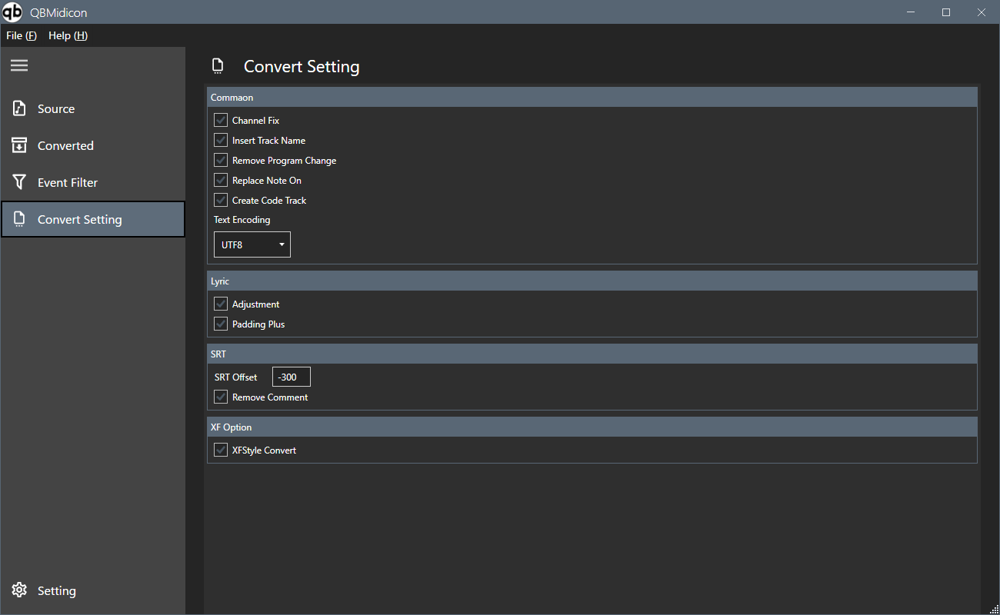

変換処理に関する各種オプションを設定します

| カテゴリ | 項目 | 値 / 状態 | 説明 |
|---|---|---|---|
| Common | Channel Fix | On/Off | 各トラックのチャンネル番号を１に固定します（ドラムトラックは１０になります） |
| Insert Track Name | On/Off | トラック名（原則インストゥルメント名）を自動挿入します | |
| Remove Program Change | On/Off | プログラムチェンジイベントを除去します | |
| Replace Note On | On/Off | ヴェロシティ値０のノートオンイベントをノートオフイベントに置き換えます | |
| Create Code Track | On/Off | コード情報用のトラックを作成します | |
| Text Encoding | UTF8 ほか | テキストデータの文字エンコーディングを指定します | |
| Lyric | Adjustment | On/Off | 歌詞データのタイミングなどを調整します |
| Padding Plus | On/Off | 歌詞の区切りに padding（+）を付与します | |
| SRT | SRT Offset | ms（例：-300） | SRT字幕データの表示タイミング調整時間をします |
| Remove Comment | On/Off | SRTデータ内のコメントを除去します | |
| XF Option | XFStyle Convert | On/Off | XF形式の場合に拡張データ（コード、リハーサルマーク）を変換します |